Grupo 1 · 13 fotografías Pexels Archivos descargados y alojados en ArchiSpotter-Test. Todas las imágenes de esta página proceden de Pexels Free. Se incorporó una fotografía adicional de Ponte Vecchio como inicio del grupo 2 para completar su pareja en la aplicación.
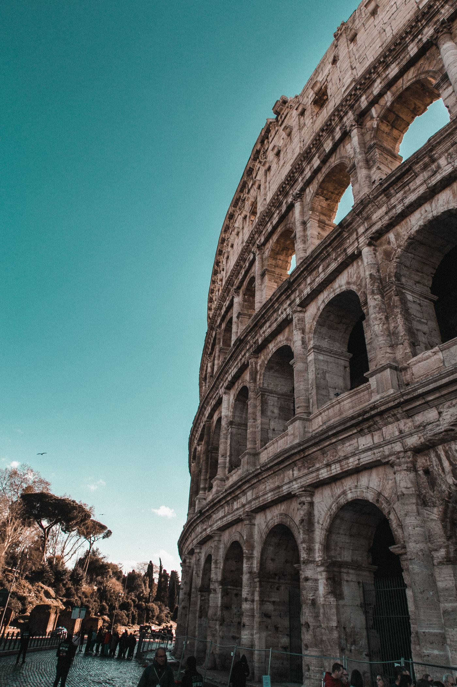
Coliseo · Davi PimentelFotografía original Pexels 2064820 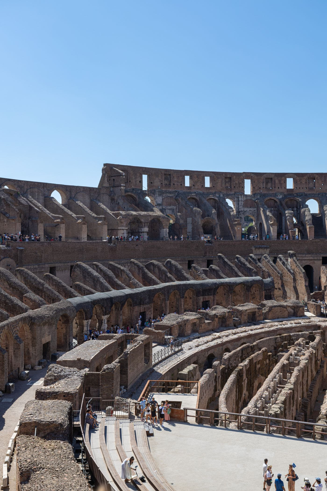
Coliseo · Rafael NicidaFotografía original Pexels 14683046 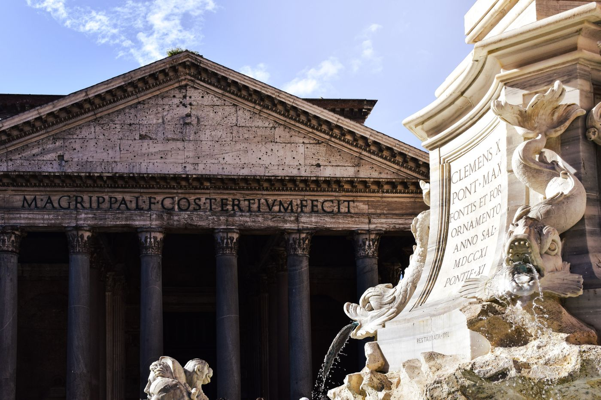
Panteón de Agripa · AXP PhotographyFotografía original Pexels 33009166 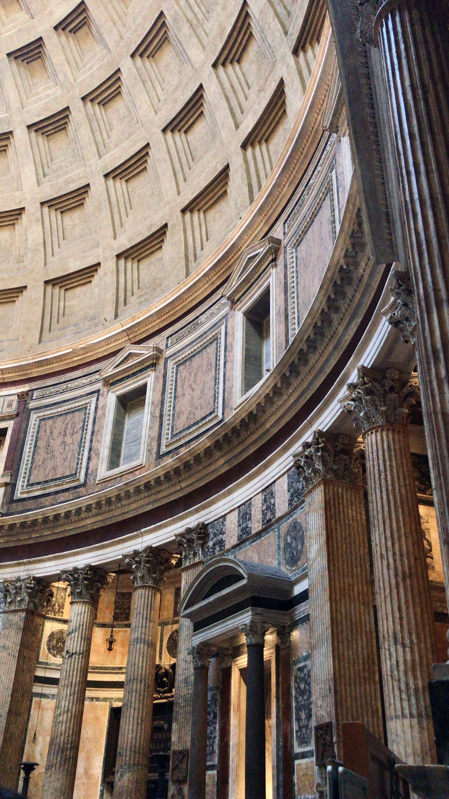
Panteón de Agripa · EliaFotografía original Pexels 11932863 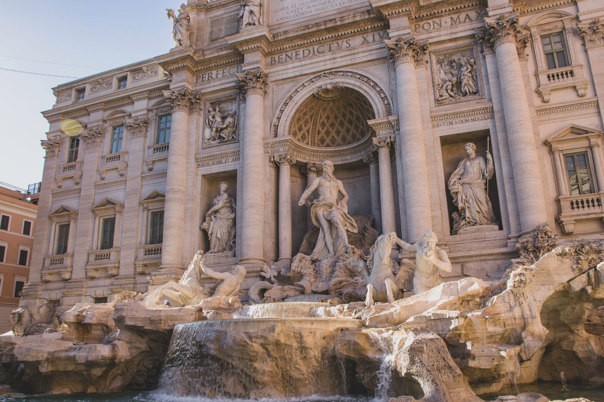
Fontana di Trevi · Federica AmerioFotografía original Pexels 12268455 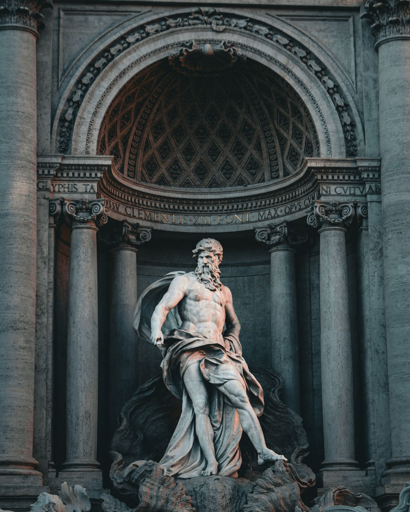
Fontana di Trevi · Hasan Lütfü ÖrsdemirFotografía original Pexels 27065807 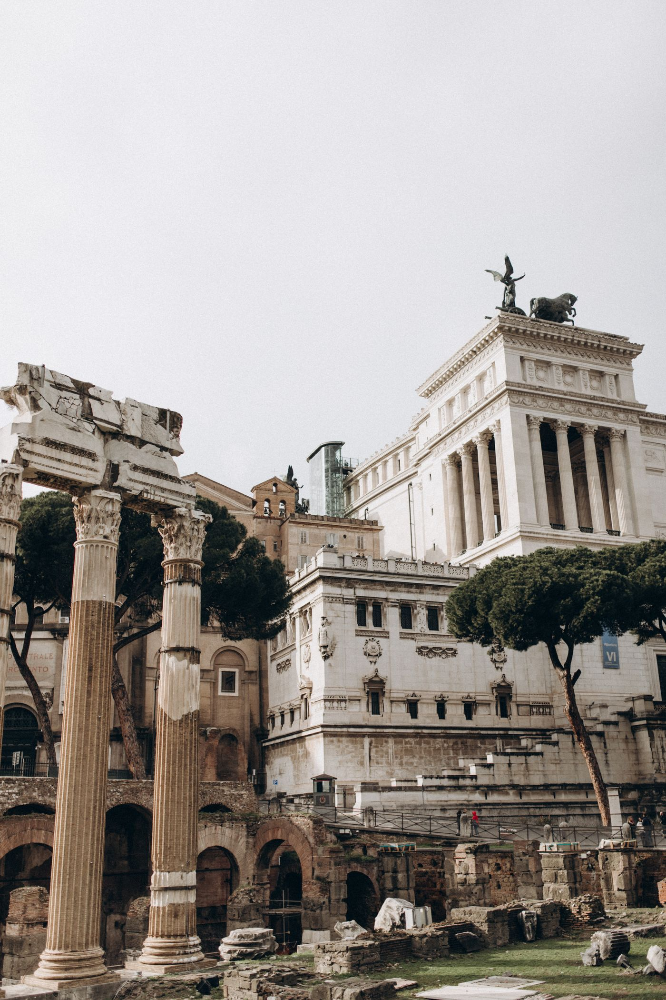
Foro Romano · V MarinFotografía original Pexels 20778184 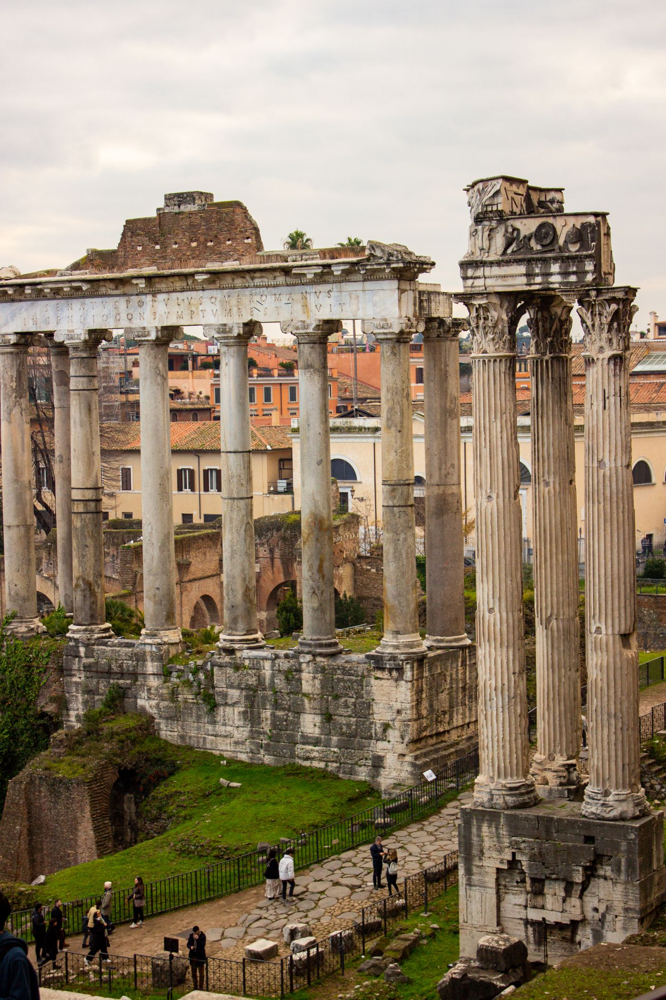
Foro Romano · Natalia SevrukFotografía original Pexels 30208659 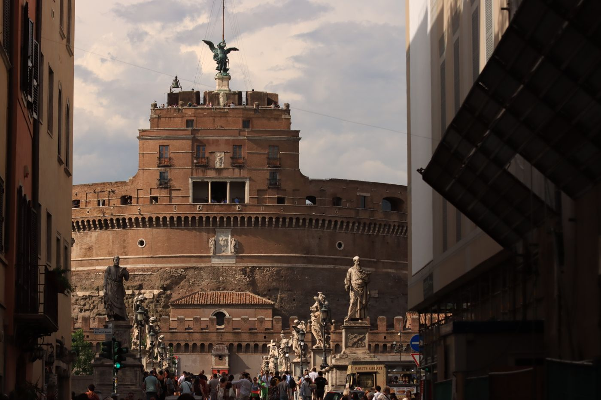
Castillo de Sant'Angelo · Efrem EfreFotografía original Pexels 15677808 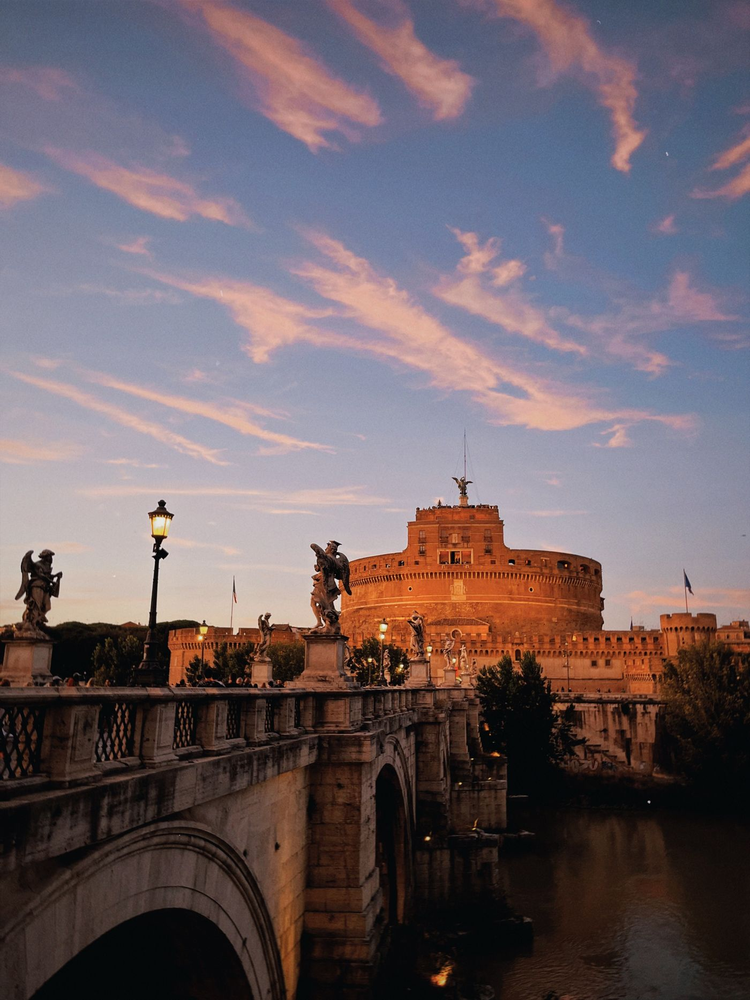
Castillo de Sant'Angelo · Linh BoFotografía original Pexels 13999204 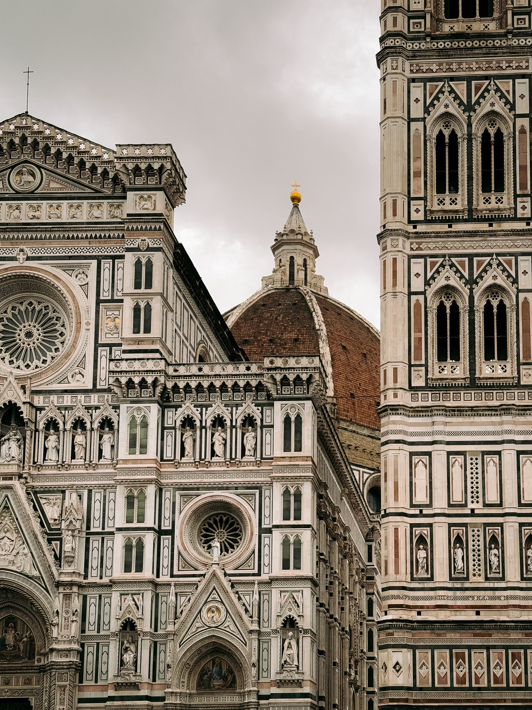
Catedral de Florencia · Alisa SkripinaFotografía original Pexels 35728016 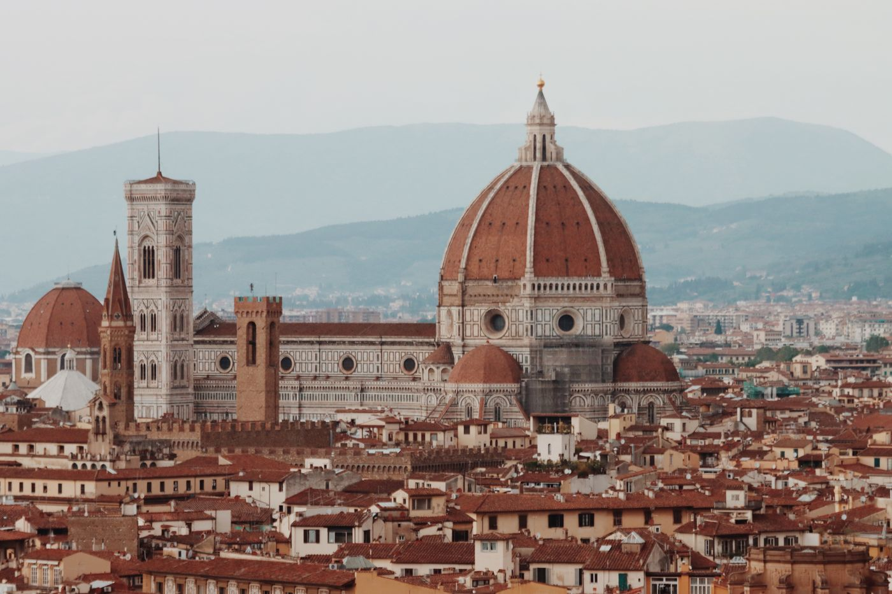
Catedral de Florencia · Efrem EfreFotografía original Pexels 20664567 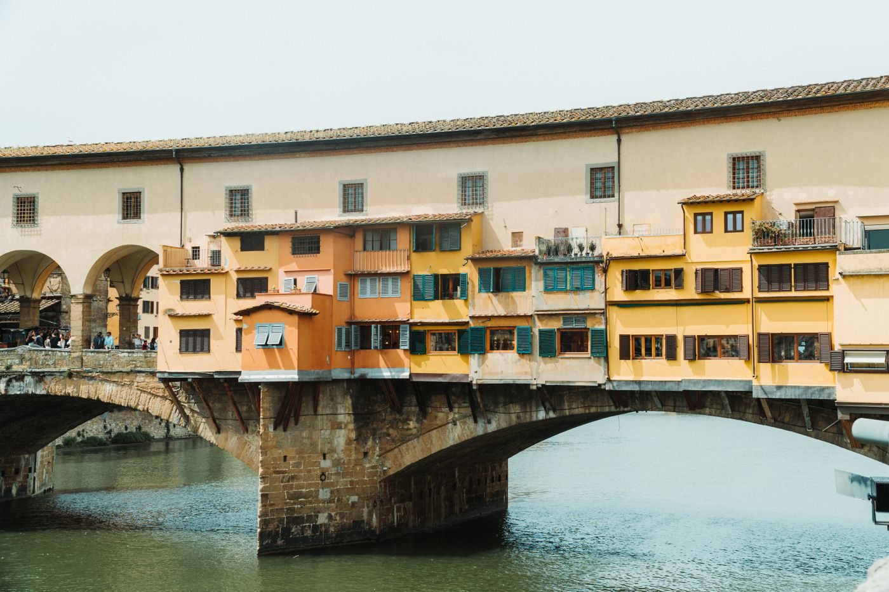
Ponte Vecchio · Mihai VlasceanuFotografía original Pexels 22806939